Srk is an great indian bollywood actor.He is also known for his big stardom. Shah Rukh Khan (pronounced [ˈʃɑːɦɾʊx xɑːn]; born 2 November 1965), also known by the initialism SRK, is an Indian actor and film producer who works in Hindi films. Referred to in the media as the "Baadshah of Bollywood" and "King Khan",[a] he has appeared in more than 90 films, and earned numerous accolades, including 14 Filmfare Awards. He has been awarded the Padma Shri by the Government of India, as well as the Ordre des Arts et des Lettres and Legion of Honour by the Government of France. Khan has a significant following in Asia and the Indian diaspora worldwide. In terms of audience size and income, several media outlets have described him as one of the most successful film stars in the world.[b] Many of his films thematise Indian national identity and connections with diaspora communities, or gender, racial, social and religious differences and grievances.
Khan began his career with appearances in several television series in the late 1980s, and made his Bollywood debut in 1992 with Deewana. He was initially recognised for playing villainous roles in the films Baazigar (1993) and Darr (1993). Khan established himself by starring in a series of top-grossing romantic films, including Dilwale Dulhania Le Jayenge (1995), Dil To Pagal Hai (1997), Kuch Kuch Hota Hai (1998), Mohabbatein (2000), Kabhi Khushi Kabhie Gham... (2001), Kal Ho Naa Ho (2003), Veer-Zaara (2004) and Kabhi Alvida Naa Kehna (2006). He earned critical acclaim for his portrayal of an alcoholic in Devdas (2002), a NASA scientist in Swades (2004), a hockey coach in Chak De! India (2007) and a man with Asperger syndrome in My Name Is Khan (2010). Further commercial successes came with the romantic dramas Om Shanti Om (2007) and Rab Ne Bana Di Jodi (2008), and with his expansion to comedies in Chennai Express (2013) and Happy New Year (2014). Following a brief setback and hiatus, Khan made a career comeback with the action film Pathaan (2023), which became the second-highest-grossing Hindi release.
As of 2015, Khan is co-chairman of the motion picture production company Red Chillies Entertainment and its subsidiaries, and is the co-owner of the Indian Premier League cricket team Kolkata Knight Riders and the Caribbean Premier League team Trinbago Knight Riders. The media often label him as "Brand SRK" because of his many endorsement and entrepreneurship ventures. He is a frequent television presenter and stage show performer. Khan's philanthropic endeavours have provided health care and disaster relief, and he was honoured with UNESCO's Pyramide con Marni award in 2011 for his support of children's education and the World Economic Forum's Crystal Award in 2018 for advocating for women's and children's rights in India. He regularly features in listings of the most influential people in Indian culture, and in 2008, Newsweek named him one of their fifty most powerful people in the world. In 2022, Khan was voted one of the 50 greatest actors of all time in a readers' poll by Empire, and in 2023, Time magazine named him one of the 100 most influential people in the world.
Shah Rukh Khan's father, Mir Taj Mohammed Khan, was an Indian independence activist from Peshawar who campaigned alongside the Khudai Khidmatgar, a nonviolent resistance movement led by Abdul Ghaffar Khan that sought a united and independent India.[1][2] Mir was a follower of Abdul Ghaffar Khan,[3] and affiliated with the Indian National Congress.[4] He was also the cousin of the major general in the Indian National Army Shah Nawaz Khan.[c] According to Khan his paternal grandfather, Mir Jan Muhammad Khan, was an ethnic Pashtun (Pathan) from Afghanistan.[7][4][8] However, his paternal cousins in Peshawar later clarified that the family speaks Hindko and is originally from Kashmir, from where they settled in Peshawar centuries back, contradicting the claim that his grandfather was a Pashtun from Afghanistan.[4][9] As of 2010, Khan's paternal family was still living in the Shah Wali Qataal area of Peshawar's Qissa Khwani Bazaar.[4]
In 1946, Mir moved to Delhi to study law at Delhi University.[10] When the partition of India occurred in 1947, he was forced to stay in Delhi, and did not return to Peshawar until many years later.[11] Khan's mother, Lateef Fatima, a magistrate, was the daughter of a senior government engineer.[12][c][13] His parents were married in 1959.[14]
Khan was born on 2 November 1965 into a Muslim family in New Delhi.[15] He spent the first five years of his life in Mangalore, where his maternal grandfather, Iftikhar Ahmed, served as the chief engineer of the port in the 1960s.[16][17][d] Khan has described himself on Twitter as "half Hyderabadi (mother), half Pathan (father), and some Kashmiri (grandmother)".[19]
Khan grew up in the Rajendra Nagar neighbourhood of New Delhi.[20] His father had several business ventures including a restaurant, and the family lived a middle-class life in rented apartments.[21] Khan attended St. Columba's School in central Delhi where he excelled in his studies and in sports such as hockey and football,[22] and received the school's highest award, the Sword of Honour.[21] Initially Khan aspired to pursue a career in sports, however owing to a shoulder injury in his early years meant that he could no longer play.[23] Instead, in his youth, he acted in stage plays and received praise for his imitations of Bollywood actors, of which his favourites were Dilip Kumar, Amitabh Bachchan, and Mumtaz.[24] One of his childhood friends and acting partners was Amrita Singh, who became a Bollywood actress.[25] Khan enrolled at Hansraj College (1985–88) to earn his bachelor's degree in economics, but spent much of his time at Delhi's Theatre Action Group (TAG),[26] where he studied acting under the mentorship of theatre director Barry John.[27][28] After Hansraj, he began studying for a master's degree in mass communication at Jamia Millia Islamia, but left to pursue his acting career.[29] He also attended the National School of Drama in Delhi during his early career in Bollywood.[30]
His father died of cancer in 1981,[e] and his mother died in 1991 from complications of diabetes.[33] After the death of their parents, his older sister, Shahnaz Lalarukh (born 1960)[34] fell into a depressed state and Khan took on the responsibility of caring for her.[31][35] Shahnaz continues to live with her brother and his family in their Mumbai mansion.[36]
Khan's first starring role was in Lekh Tandon's television series Dil Dariya, which began shooting in 1988, but production delays led to the Raj Kumar Kapoor directed 1989 series Fauji becoming his television debut instead.[37] In the series, which depicted a realistic look at the training of army cadets, he played the leading role of Abhimanyu Rai.[38][39] This led to further appearances in Aziz Mirza's television series Circus (1989–90) and Mani Kaul's miniseries Idiot (1992).[40] Khan also played minor parts in the serials Umeed (1989) and Wagle Ki Duniya (1988–90),[40] and in the English-language television film In Which Annie Gives It Those Ones (1989).[41] His appearances in these serials led critics to compare his look and acting style with those of the film actor Dilip Kumar,[42] but Khan was not interested in film acting at the time, thinking that he was not good enough.[40][43]
Khan changed his decision to act in films in April 1991,[44] citing it as a way to escape the grief of his mother's death.[45] He moved from Delhi to Mumbai to pursue a full-time career in Bollywood, and was quickly signed to four films.[44] His first offer was for Hema Malini's directorial debut Dil Aashna Hai,[30][38] and by June, he had started his first shoot.[46] His film debut was in Deewana, which was released in June 1992.[47] In it he starred alongside Divya Bharti as the second male lead behind Rishi Kapoor. Deewana became a box office hit and launched Khan's Bollywood career;[48] he earned the Filmfare Best Male Debut Award for his performance.[49] Also released in 1992 were Khan's first films as the male lead, Chamatkar, Dil Aashna Hai, and the comedy Raju Ban Gaya Gentleman, which was his first of many collaborations with the actress Juhi Chawla.[50] His initial film roles saw him play characters who displayed energy and enthusiasm. According to Arnab Ray of Daily News and Analysis, Khan brought a new kind of acting as he was "sliding down stairs on a slab of ice, cartwheeling, somersaulting, lips trembling, eyes trembling, bringing to the screen the kind of physical energy ... visceral, intense, maniacal one moment and cloyingly boyish the next."[51]
Among his 1993 releases, Khan garnered the most appreciation for portraying villainous roles in two box office hits: a murderer in Baazigar, and an obsessive lover in Darr.[52] Baazigar, in which Khan played an ambiguous avenger who murders his girlfriend, shocked Indian audiences with an unexpected violation of the standard Bollywood formula.[53] In The Cambridge Companion to Modern Indian Culture, Sonal Khullar called the character "the consummate anti-hero".[54] His performance in Baazigar, which would be his first of many appearances with actress Kajol, won Khan his first Filmfare Award for Best Actor.[55] In 2003, the Encyclopaedia of Hindi Cinema stated that Khan "defied the image of the conventional hero in both these films and created his own version of the revisionist hero".[55] Darr marked the first of Khan's many collaborations with filmmaker Yash Chopra and his company Yash Raj Films. Khan's stammering and the use of the phrase "I love you, K-k-k-Kiran" were popular with audiences.[56] Malini Mannath of The Indian Express argued that he "walks away with the acting honours in yet another negative role".[57] For Darr he received a nomination for the Filmfare Award for Best Performance in a Negative Role, also known as the Best Villain Award, but lost to Paresh Rawal for Sir.[58] Also in 1993, Khan performed a nude scene with Deepa Sahi in Maya Memsaab, although parts of it were censored by the Central Board of Film Certification.[59] The ensuing controversy prompted him to eschew such scenes in future roles.[60]
In 1994, Khan played a love-struck musician in Kundan Shah's comedy-drama film Kabhi Haan Kabhi Naa opposite Deepak Tijori and Suchitra Krishnamurthy, which he later professed was his favourite role. His performance earned him a Filmfare Critics Award for Best Performance, and in a retrospective review from 2004, Sukanya Verma of Rediff.com referred to it as Khan's best performance, calling him "spontaneous, vulnerable, boyish, mischievous and acting straight from the heart".[61] Also in 1994, Khan won the Filmfare Best Villain Award for his role as an obsessive lover in Anjaam, co-starring Madhuri Dixit.[55] At the time, playing antagonistic roles was considered risky to a leading man's career in mainstream Hindi cinema. Arnab Ray subsequently credited Khan for taking "insane risks" and "pushing the envelope" by choosing to play such characters, through which he established his career.[51] The director Mukul S. Anand called him "the new face of the industry" at the time.[45]

Khan starred in seven films in 1995, the first of which was Rakesh Roshan's melodramatic thriller Karan Arjun. Co-starring Salman Khan and Kajol, it became the second-highest-grossing film of the year in India.[62] His most significant release that year was Aditya Chopra's directorial debut, the romance Dilwale Dulhania Le Jayenge, in which he played a young Non-resident Indian (NRI) who falls in love with Kajol's character during a trip across Europe. Khan was initially reticent to portray the role of a lover, but this film is credited with establishing him as a "romantic hero".[63] Lauded by both critics and the public, it became the year's highest grossing production in India and abroad and was declared an "all time blockbuster" by Box Office India,[62][64] with an estimated lifetime gross of ₹2 billion (US$61.68 million) worldwide.[65][66] It is the longest-running film in the history of Indian cinema; it is still showing at the Maratha Mandir theatre in Mumbai after more than 1000 weeks as of early 2015.[67][68] The film won ten Filmfare Awards, including the second of Khan's Best Actor Awards.[55] The director and critic Raja Sen said, "Khan gives a fabulous performance, redefining the lover for the 1990s with great panache. He's cool and flippant, but sincere enough to appeal to the [audience]. The performance itself is, like the best in the business, played well enough to come across as effortless, as non-acting."[69]
In 1996, all four of Khan's releases failed critically and commercially,[70] but the following year, his starring role opposite Aditya Pancholi and Juhi Chawla in Aziz Mirza's romantic comedy Yes Boss earned him accolades that included a Filmfare Best Actor nomination.[58] Later in 1997, he starred in Subhash Ghai's diasporic-themed social drama Pardes,[71] portraying Arjun, a musician facing a moral dilemma. India Today cites it as one of the first major Bollywood pictures to succeed in the United States.[72] Khan's final release of 1997 was the second collaboration with Yash Chopra in the popular musical romance Dil To Pagal Hai. He portrayed Rahul, a stage director caught in a love triangle between Madhuri Dixit and Karisma Kapoor. The film and his performance met with critical praise, winning Khan his third Best Actor Award at Filmfare.[55]
Khan performed the lead role in three films and made one special appearance in 1998. In his first release of the year, he played a double role opposite Juhi Chawla and Sonali Bendre in Mahesh Bhatt's action comedy Duplicate, the first of his many collaborations with Yash Johar's production company Dharma Productions. The film was not well received,[73] but India Today lauded Khan for his energetic performance.[74] The same year, Khan won critical praise for his performance as an All India Radio correspondent who develops an infatuation for a mysterious terrorist (Manisha Koirala) in Dil Se..,[75] the third instalment of Mani Ratnam's trilogy of terror films.[76][77] In his final release of the year, he portrayed a college student in Karan Johar's romance Kuch Kuch Hota Hai, in which he was involved in a love triangle along with Kajol and Rani Mukerji. The writer Anjana Motihar Chandra has referred to the picture as the blockbuster of the 1990s, a "pot-pourri of romance, comedy, and entertainment."[78] Khan won the Best Actor award at the Filmfare Awards ceremony for the second consecutive year,[55] although he and several critics believed his performance to have been overshadowed by that of Kajol.[79]
Khan's only release in 1999 was Baadshah, in which he starred opposite Twinkle Khanna. Although the film underperformed at the box office,[85] it earned him a Filmfare Award nomination for Best Performance in a Comic Role, which he lost to Govinda for Haseena Maan Jaayegi.[58] Khan became a producer in 1999 in a collaboration with the actress Juhi Chawla and the director Aziz Mirza for a production company called Dreamz Unlimited.[86] The company's first production, Phir Bhi Dil Hai Hindustani (2000), starring Khan and Chawla, was a commercial failure.[87] It was released one week after Kaho Naa... Pyaar Hai, starring Hrithik Roshan, then a newcomer, who critics believed overshadowed Khan.[88] Swapna Mitter of Rediff.com spoke of Khan's predictable mannerisms, saying "Frankly, it's high time he innovated his act a little."[89] Khan did a supporting role in Kamal Haasan's Hey Ram (2000), which was made simultaneously in Tamil and Hindi. He thereby made his Tamil debut by playing the role of an archaeologist named Amjad Khan.[90] He performed free of charge as he wanted to work with Haasan.[91][92] On Khan's performance, T. Krithika Reddy of The Hindu wrote, "Shah Rukh Khan, as usual comes up with an impeccable performance."[90]
In 2001, Dreamz Unlimited attempted a comeback with Khan portraying the title role in Santosh Sivan's historical epic Aśoka, a partly fictionalised account of the life of emperor Ashoka. The film was screened at the Venice Film Festival and the 2001 Toronto International Film Festival to a positive response,[93] but it performed poorly at Indian box offices.[94] As losses continued to mount for the production company,[88] Khan was forced to close srkworld.com, a company that he had started along with Dreamz Unlimited.[95] In December 2001, Khan suffered a spinal injury while performing an action sequence for a special appearance in Krishna Vamsi's Shakti: The Power.[96] He was subsequently diagnosed with a prolapsed disc, and attempted multiple alternative therapies. None of these provided a permanent solution to the injury, which caused him severe pain while shooting several of his films.[96][97] By the beginning of 2003, his condition had worsened to the point that he had to undergo anterior cervical discectomy and fusion surgery at Wellington Hospital, London.[98][99][100] Khan resumed shooting in June 2003, but he reduced his workload and the number of film roles he accepted annually.[97]
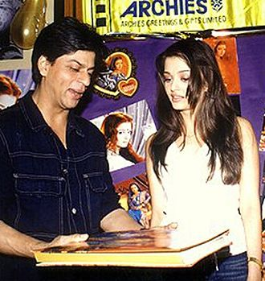Successes during this time included Aditya Chopra's Mohabbatein (2000), and Karan Johar's family drama Kabhi Khushi Kabhie Gham... (2001),[87][101] which Khan cites as a turning point in his career.[102] Both films co-starred Amitabh Bachchan as an authoritarian figure, and presented ideological struggles between the two men.[103][104] Khan's performances in the films were met with wide public appreciation, and he was awarded his second Filmfare Critics Award for Best Actor for Mohabbatein.[58][105] Kabhi Khushi Kabhie Gham... remained the top-grossing Indian production of all time in the overseas market for the next five years.[106]
In 2002, Khan played the title role as a rebellious alcoholic opposite Aishwarya Rai and Madhuri Dixit in Sanjay Leela Bhansali's period romance Devdas. At a cost of over ₹500 million (US$10.29 million), it was the most expensive Bollywood film ever made at the time,[107] and became a box office success, earning approximately ₹1.68 billion ($35 million) worldwide.[108] The film earned numerous accolades including 10 Filmfare Awards, with Best Actor for Khan,[49] and a BAFTA Award for Best Film Not in the English Language.[109] Khan next starred in Kal Ho Naa Ho (2003), a comedy-drama written by Karan Johar and set in New York City, which became the second-highest-grossing film domestically and the top-grossing Bollywood film in external markets that year.[101][110] Co-starring with Jaya Bachchan, Saif Ali Khan, and Preity Zinta, Khan received critical praise for his portrayal of Aman Mathur, a man with a fatal heart disease, with critics praising his emotional impact upon audiences.[111] Conflict broke out between Khan and the other partners of Dreamz Unlimited over the failure to cast Juhi Chawla in their 2003 production of Aziz Mirza's Chalte Chalte, and they parted ways, despite the film's success.[112]
| Movie Name | Release Date | Poster |
|---|---|---|
| Deewana | 1992 | 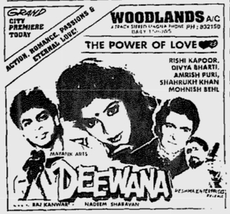 |
| Chamatkar | 1992 | 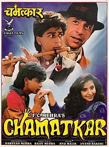 |
| Dil ashana hai | 1992 | 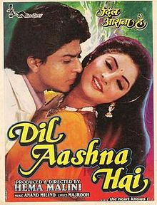 |
| Raju bangya Gentleman | 1992 | 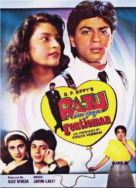 |
| Maya Memsaab | 1993 | 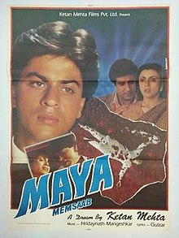 |
| Baazigar | 1993 | 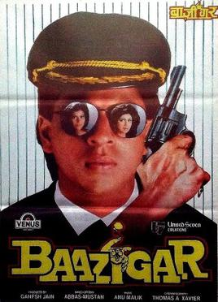 |
| Darr | 1993 | 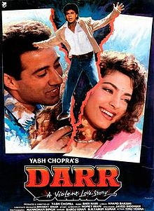 |
| Karan Arjun | 1995 | 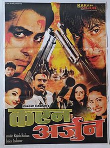 |
| Dilwale Dulhania Le Jayenge | 1995 | 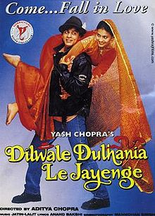 |
| Dil toh Pagal Hai | 1997 | 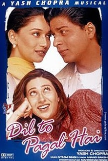 |
| Kuch Kuch Hota Hai | 1998 | 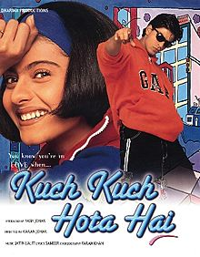 |
| Baadshah | 1999 | 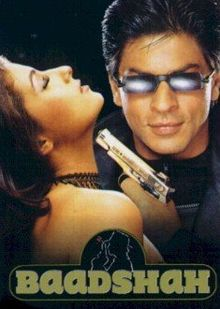 |